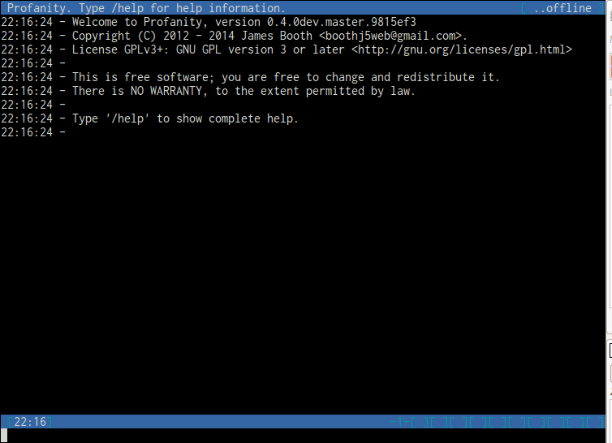
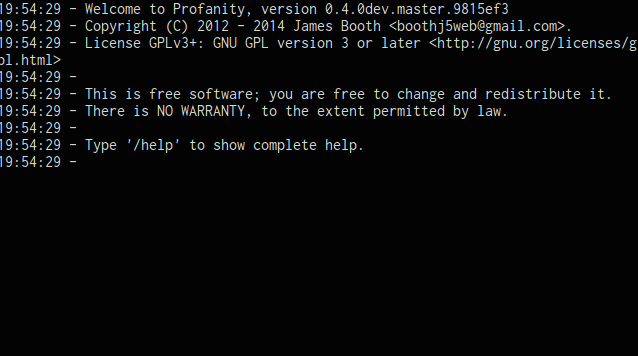

Contents
Starting Profanity
To start Profanity, run:
$ profanityFrom your command line.
Inline help is available using the /help command.
User Interface

The user interface is split into four main areas:
Title bar
Shows the title for the current window (usually the contact you are chatting with, or the chat room you have joined), and your current presence in the far right corner.
Main window area

Used to show the current active window. The first window (1) is always used as the console window where system messages and command responses are shown.
Status bar
Shows the time, the user you are logged in as, and on the far right the status of each window. If the window is used, its number will appear, if it has new messages of any kind, the number will be highlighted. The current window is shown as -1-.
Input area
Where commands and messages are entered, use the tab key to autocomplete commands.
All commands start with a / character, a message will appear in the console if you send an unknown command.
To escape a command and send it instead as a message, use and additional /, for example, if you are chatting with a bot that requires a command /help enter the following:
//helpSwitching between windows
To make a window visible in the main window area, use any of the following:
Alt-1 to Alt-0
F1 to F10
Alt-left, Alt-right
The /win command.
Certain commands automatically make a window the main window such as joining a chat room, or sending a message to a contact.
When a window is visible new messages within it do not highlight the window number in the status bar.
Connecting
To connect to an XMPP chat service, use the /connect command:
/connect user@server.comYou will be prompted by the status bar to enter your password. Once entered you will be connected, and you should start receiving presence notifications from your contacts in the console window.
Sending a message
To send a message use the /msg command:
/msg mycontact@server.com Hello there!The above will send "Hello there!" to mycontact@server.com. A new virtual window will be opened and become visible in the main window area, the message will be sent and displayed.
The message is optional:
/msg mycontact@server.comThe above will open the new window, make it visible, but no message is sent. This can be useful if you don't currently have a virtual window open with the contact and want to see some history of your conversation with that contact (see the /history command).
Profanity uses the contact's nickname by default, if one exists. For example:
/msg Bob Are you there bob?Double quotes must be used if the nickname contains spaces:
/msg "Bob Smith" Here is the message.Note that Profanity will automatically add the quotes on tab autocompletion, for example:
/msg B<tab>Will autocomplete to:
/msg "Bob Smith"Managing windows
You can close a window whilst viewing it by using the /close command.
To see a list in the console of all your currently used windows, what they are being used for and whether there are any unread messages in them, use the /wins command:
/winsChanging your presence
To change your presence, use the following commands:
/away/xa/chat/online/dndEach of these commands accepts a message as a parameter, so to show the message "I'm very busy" to your contacts when setting status to Do Not Disturb:
/dnd I'm very busyLogging out
To log out from the current chat service, use the /disconnect command.
To quit profanity, use the /quit command.